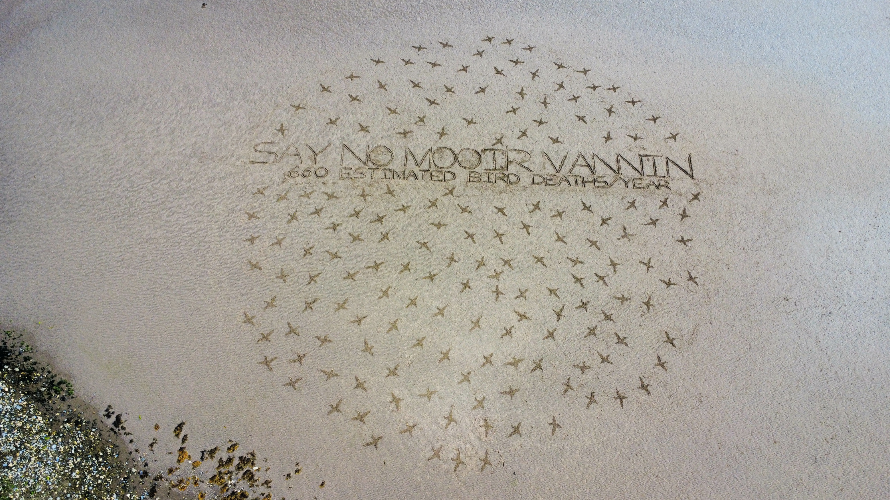

A giant message raked into the sand at low tide: Say No Mooir Vannin, ringed by a flock of birds — and the stark figure the piece carries: 660 estimated bird deaths a year from the proposed offshore wind farm.

“Say No Mooir Vannin — 660 estimated bird deaths/year.” Beach art on the Manx sand, seen from above.
Manx Wildlife Trust has warned that the project's baseline ecological assessments are inadequate and that its impacts on our wildlife have, to date, been understated. This piece — best seen from the air — puts that warning where everyone can see it: on our own shore.